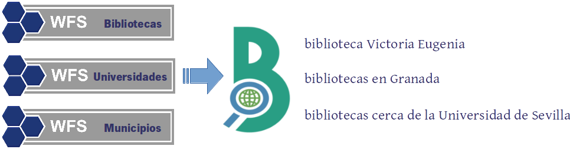

El uso de estádares para la difusión de información espacial está ampliamente extendido hoy en día. Además del acceso, permiten la consulta de datos específicos en base a criterios de búsquedas.
Sin embargo, las búsquedas de información espacial realizadas a través de estándares suelen requerir que el usuario conozca la estructura interna de la misma. Por ejemplo, la siguiente consulta utiliza un filtro CQL para buscar por su nombre un fenómeno espacial o feature de tipo "parque" a través de una petición a un servicio WFS por el que se publica la capa correspondiente:
<wfs:GetFeature version="1.1.0">
<wfs:Query typeName="espacios:Parques">
<ogc:Filter>
<ogc:PropertyIsEqualTo>
<ogc:PropertyName>nombre_parq</ogc:PropertyName>
<ogc:Literal>Alamillo</ogc:Literal>
</ogc:PropertyIsEqualTo>
</ogc:Filter>
</wfs:Query>
</wfs:GetFeature>
Puede observarse como es necesario especificar no solo el nombre por el que se busca, sino también el de la propiedad que lo contiene, 'nombre_parq'. Además, la consulta debe ejecutarse específicamente contra la capa en cuestión, indicada en el typeName.
Un usuario externo no posee dicha información. El objetivo es que pueda realizar las búsquedas mediante lenguaje natural, es decir, especificando únicamente un nombre, palabra o frase.
Geobúsquedas es el nombre que recibe la instancia centralizada de Apache SOLR del SIGCorporativo, a la que se le ha añadido una serie de funcionalidades que faciliten la indexación y búsqueda de información espacial, tales como:
De esta manera, cada core de Geobúsquedas contiene la información indexada de uno o varios servicios WFS. Una vez configurados internamente, los elementos espaciales pueden buscarse mediante consultas en lenguaje natural, por los valores de sus atributos o mediante relaciones espaciales entre ellos.
Para indexar tu información necesitas por tanto:
Una vez indexada la información, para consumir el servicio existen dos opciones:
https://geobusquedas-sigc.juntadeandalucia.es/geobusquedas/sigc/search?q=colegios+en+Tomares&wt=json&indent=true